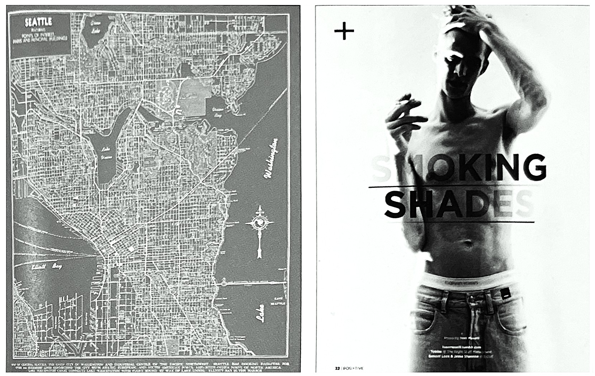
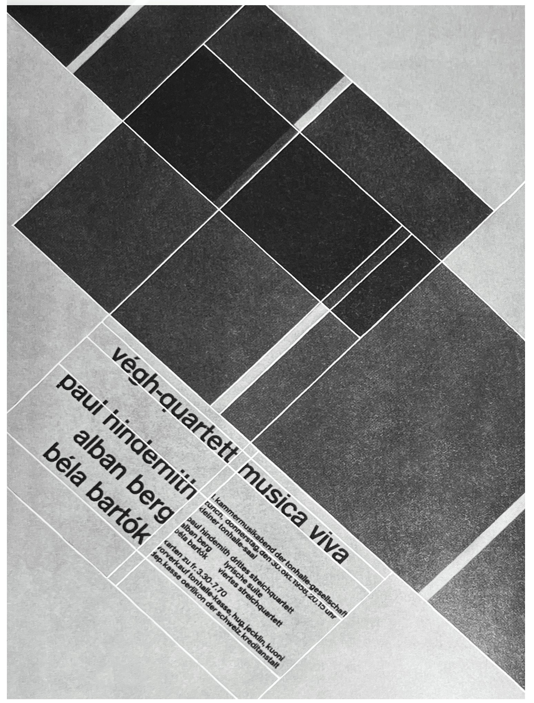
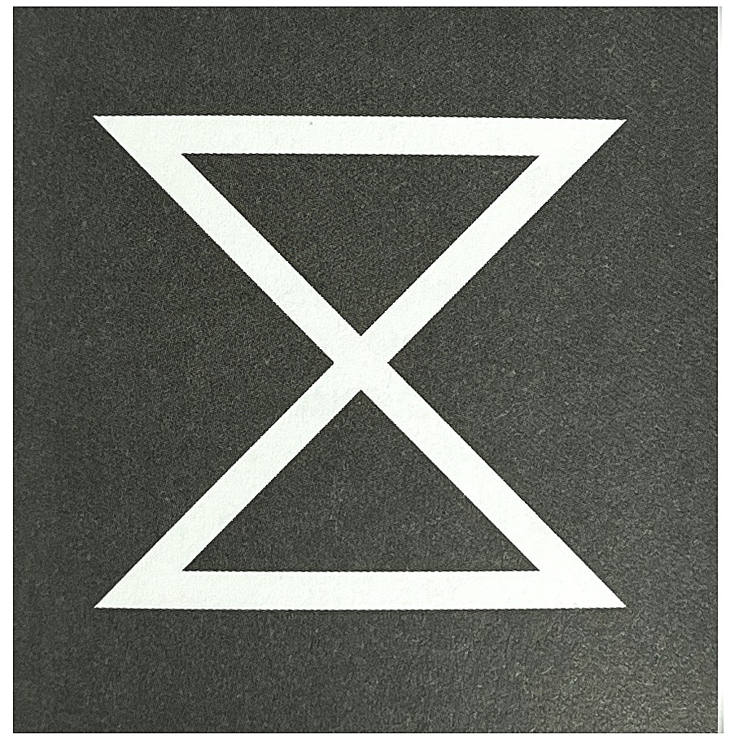
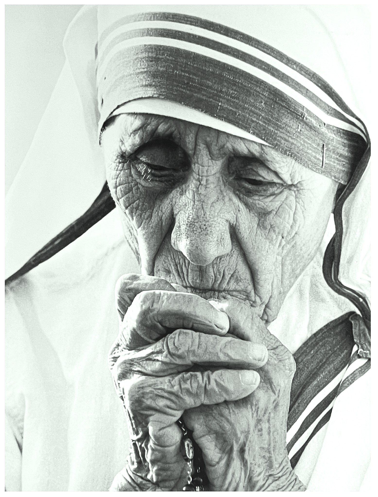
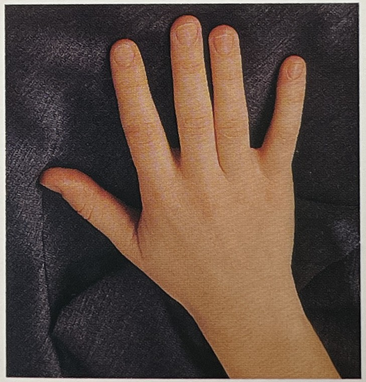
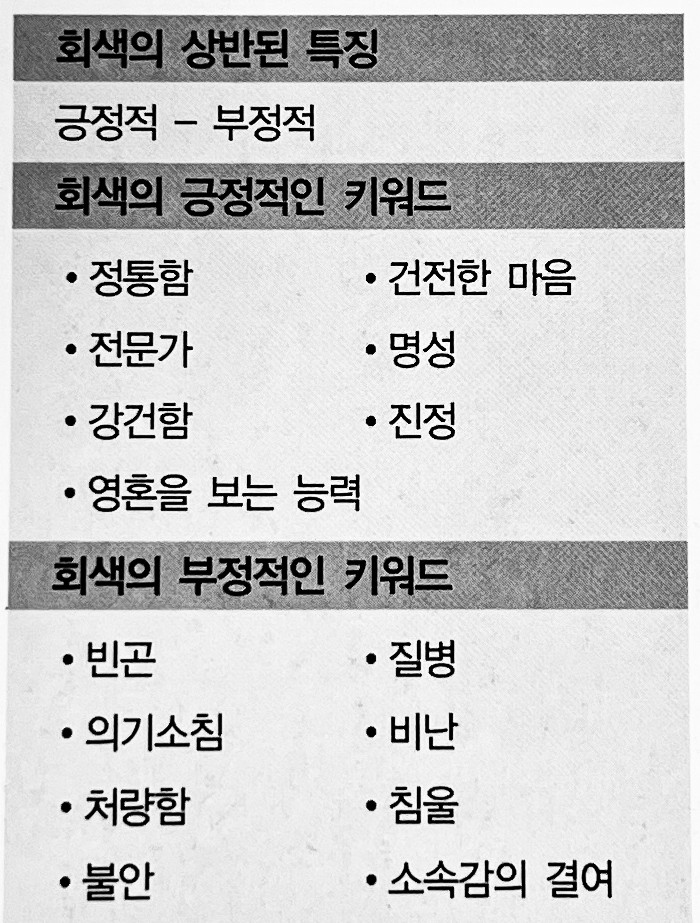

차분한 느낌을 전달할 때 사진을 무채색으로 표현하면 색에의해 왜곡된 느낌을 전달하는 것을 막을 수 있다. 단 핵심이 되는 느낌이 없어지기 때문에 이것에 대비하여 시각적인 효과를 생각하는 것이 좋다. 다양항 색과 잘 어울리지만 농도의 차이를 잘 조절해야 한다.
1. 색의 성격오랜 시간 만들어진 색상이 가지고 있는 성격 :
솔직, 보수적, 이성적, 감정 표현력이 약함, 감수성, 인내, 책임감, 차분함
2. 색의 영향사람이 인지했을 때 느낌 :
정신적 안정감, 무겁고 딱딱함, 민족성, 엄숙
3. 색의 처방색상을 의도적으로 활용할 수 있는 방법 :
긍정적 사고력, 저항력

* 미국 시애틀의 지도를 라인 아트로 표현했다. 바탕에 사용한 회색이 많은 정보를 시각적으로 복잡헤 보이지 않게 한다.
** 차분한 느낌을 줄 때 사진을 흑백으로 사용하면 특정 색이 주는 이미질 왜곡되는 것을 막을 수 있다.
포스터-요셉 뮐러 브로크만 : 회색은 나쁘지 않지만 눈에 띄는 것 또한 없습니다. 회색을 활용할 때 구도와 여백을 이용해 차별화를 두면 좋습니다.
회색의 상징[3]
긍정적 감정과 상징:
속도, 도시, 모던함, 차분한, 금욕
부정적 감정과 상징:
나이 듬, 불확실, 권태, 우울, 평범함, 생기 없음, 숨김
연상되는 자연/자연물:
돌, 시멘트, 재
정치.종교적 상징:
중림, 불교 승려

회색의 심볼사다리꼴[5]
회색은 검정과 흰색 사이에 이쓴 두 색이 결합된 수 많은 색들로, 흰색과 검정을 포함하여 회색은 무색 혹은 뉴트럴이라 하기도 한다. 색상이 있는 색들의 보색은 색상환에서 반대편에 있는 색이라 할 수 있다. 그러나 회색은 스펙트럼이 반전될 때 회색의 그 반대편에는 회색이기 때문에 따로 보색이없으며 그 자체가 보색이라 할 수 있다.
도덕적 의미에서 회색은 두 가지로 사용된다. 부정적으로는 명확하지 않는 도덕적 가치를 포함한 상을, 긍정적으로는 전체 검정 혹은 전체 흰색의 시각을 균형잡히게 하는 의미를 지니다. 예를 들어 회색의 강도에 따라 선과 악의 등급을 나타내는 의미로 사용되기도 한다.
회색은 나이가 들어감에 따라 머리색이 회색으로 되어가는 것에서 볼 수 있어 어떤 의미에서 노령, 노인과 동의어로 사용된다. 이는 노인에 대한 경제적, 사회적 영향에 대해 언급할 때 회색 권력gray power으로, 그리고 노인의 권리확대를 목표로 하는 운동단체인 회색표범gray panthers에서 사용되고 있다.
회색은 엄밀히 색이 아니면서, 밝지도 어둡지도 않다. 그래서 우리는 여기에서 자극을 느끼지 못하며 심리적 의도에서도 자유롭다. 검정과 하양의 중간에 위치하며 두 색상에 의해 생겨나는 사실 외에 특별한건 없다. 색 사이에 놓이면 주체도 객체도 아니고, 내부에 있는지 외부에 놓여 있는지도 불분명하다. 긴장감도 해방감도 느끼 수 없는 게 회색이다. 회색은 그래서 오로지 경계, 즉 소유자가 없는 영역에 속한다. 경계, 윤곽 그리고 분리의 기준으로서 양극단을 이을 수 있는 추상적인 색상이다. 회색은 그래서 어떤 이론으로부터도 자유롭다. 회색은 곧 모든 이론이다. 막스 뤼셔Max Luscher
회색의 힘[1]대부분의 동물들의 색상 인식능력은 제한되어 있다. 하지만 인간의 경우 색맹만 아니라면 검정과 하양 사이에 있는 회색 톤까지 세밀하게 구분해 낸다.
사람의 눈 안은 빛이 없는 칠흑이다. 그래서 망막 간상체는 어떤 색이 완벽히 어두우면 아예 인식을 못한다. 빛이 조금이라도 있어야 눈에 어던 색상으로 나타나는 것이다. 그래서 인간에게 명암은 색 인식의 기본이다. 이를 기본으로 다양한 색깔을 가려낸다.
회색은 무채색으로서 원시적인 색인 검정과 하양 계열에 속한다. 그렇지만 이들 색만큼 회색을 분명히 정의하긴 힘들다. 회색은 두 극단의 색 사이에서 중립을 나타내고, 그래서 무미건조하고 공허한 느낌을 자아낸다.
테레사 수녀는 어두운 회색의 대표적 성향인 존엄과 고행, 그리고 밝은 회색의 성향인 연민을 몸소 행한 인물이다.
회색의 어원을 따져보면 고대 인도-게르만족의 단어인 'Grao, Gra, Gray'가 등장한다. 이는 '희미하게 빛나다'와 '빛나는'이라는 개념이 섞여 나왔다.
상징적인 면에서 회색은 양면성을 가진다. 회색은 모두를 기피하고 살아가는 존재를 떠올리게 한다. 그림자, 그늘, 귀신 등을 연상케 한다. 회색은 또한 원초적인 고요함을 드러내며 이런 면에서 보라와 같은 축을 이룬다. 그러면서도 빛과 어두움 사이에 놓여 서러를 연결시킨다.
민속언어에서는 회색이 쓰이는 용도가 분명하다. 주로 음울한 사건이나 장면을 뜻한다. '회색 권위자'는 막후 인물'이라는 뜻으로 배후에서 알려지지 않는, 즉 투명성이 없는 '회색 구역'에서 활약하는 정치가를 뜻한다. 이런 이미지는 검열이나 합법적 중개자 없이 열리는 '암시장'과 연결된다. 신체 질병 이름에서도 비슷한 심상이 활용된다. '백내장'은 눈의 수정체가 혼탁해진 증상을 나타낸다.
이 밖에도 비슷한 느낌을 활용한 표현은 많다. '회색 아침'은 '새벽녘'이라는 뜻으로 밤의 어둠과 다가오는 빛 사이의 불분명한 여명의 빛을 말한다. '회색 늑대'는 비밀 동맹과 유사한 터키식 테러 조직이다.
우리는 종종 오싹한, 공포 등의 불편한 기분을 경험한다. 이런 감정을 극복한 소수만이 며예롭게 늙어간다. 이때 회색은 늙어 가는 것, 창백해 지는 것, 소멸되는 것 등의 의미를 내포한다. 회색은 그것을 다른 종류로 가장할 수 있다. 음흉한 심정을 내포하는 상황이다. 회색성향의 사람들은 이런 일을 잘한다. 회색을 좋아하는 사람은 자신이 투명하게 얄려지기를 꺼린다. 회색 외투를 걸치고 스스로를 보호한다.
밝은 회색은 복잡하지 않고 가벼운 인상을 던진다. 이에 반해 어두운 회색은 무겁고 무엇인가가 조용히 가득찬 느낌이 든다.
회색(Gray)[1]회색은 검정색과 흰색의 중간색으로 순수와 무지(無知)의 중간 지점에 위치한다. 회색 성향의 사람들은 낙관적이며, 최상의 것이 아직 도래하지 않았다는 점을 알고 있다는 장점을 지니고 있으나 원하는 것을 오늘 얻을 수 없고 내일쯤에나 얻을 수 있다고 믿는다는 단점이 있다. 하지만 불행히도 내일은 오지 않는다.
회색 성향의 사람들은 언제나 필사적으로 현재의 상황에서 벗어나려고 한다. 이들은 일등이 될 사람은 자신이 아니라 항상 다른 사람이라고 생각한다. 이들은 또한 자신이 명확성이 부족한 것에 두려움을 느낀다.
어두운 회색 옷감은 극도의 편협함을 보여 준다. 그 결과 비난과 투옥이 일어날 수도 있다.
‘회색’이라고 묘사되는 경우는 대개 둔하다는 것을 의미하거나 이들의 고집은 바위처럼 확고해서 조화로운 안정성을 얻기 위해 계속적으로 노력한다.
회색 성향의 사람들은 급하게 일을 처리하지 않으며 부당하게 어느 상화에 매달리지도 않는다. 항상 도움의 손길을 줄 준비가 되어 있고 일반적으로 사람들이 원치 않는 일을 한다. 이들은 조용하고 존경받는 삶을 살고 싶어 한다.
틴트[1]밝은 회색과 관련 있는 사람들은 구제와 구호를 위해 사는 사람들이다. 이들은 곤란함을 무릅쓰고 분투하며, 비록 얼마 되지 않더라도 신이 주신 축복을 헤아리며 사는 이들이다. 밝은 회색은 회색보다 흰색의 비율이 높아 더 높은 진동을 일으킨다. 이들은 순응하고 전진할 수 있도록 하는 빛을 추구한다. 평화로운 마음과 고요함이 이 색의 주요 특징이다.
하지만 밝은 회색 성향의 사람들은 어디에도 속해 있지 않다고 느끼기도 한다. 종종 여정의 시작이나 끝을 나타낼 때도 있다.
셰드[1]어두운 회색은 편협한 경향이 있다. 고통과 가난으로 인해 모욕과 수치를 느낄 때도 있다. 항상 괴로워하며 보이지 않는 불안감에 벗어나려고 노력하지만 어딘가에 속박되어 도망칠 길이 없다고 느낀다.
우울증에 걸리는 경우도 종종 있다. 나이든 사람이나 연약한 사람은 회색의 영향 아래 놓일 때가 많이 있다. 어두운 회색 성향의 사람들은 자신들이 지니고 있는 결점을 떨쳐버리려고 노력하지만 기괴한 행동을 벌일 때가 있다.
 회색으로 표현된 패션[3]회색은 남성복에서 명도에 따라 밝은 회색계열을 봄/여름에, 짙은 게열은 가을/겨울 수트에 많이 사용된다. 보수적이고 전통적이면서 모던한 이미지로 트래디셔널 브랜드에서 많이 사용된다. 트렌드에 휩쓸리지 않고 폭넓게 사용되는 대중성 많은 색체기획에서 기본색으로 설정하는 경우가 많다.
밝은 파스텔톤과 함께 사용하면 부드러운 이미지를, 비비드한 원색과 함께 할때는 강한 대비감을 주는 검정과 달리 약화된 경계선으로 중성화된 대비감을 준다.
회색은 분홍, 빨강, 하늘, 파랑게열과 함께 편안한 색감으로 연출하며, 짙은 회색은 검정과 같이 권위를 나타내고, 회색에 광택이 더해져 은색이 되면 미래적 이미지를 나타내는 주요한 색으로 사용된다.
회색 인테리어[3]회색은 차갑고 현대적 이미지를 주는 무난한 색이며, 중성적인 이미지로 다양한 색과 다채롭게 배색될 수 있어 선호도가 높아지고 있다. 차분하고 현대적인 이미지로 사무실이나 스튜디오를 위한 공간색으로 많이 사용한다. 또한 성숙한 이미지로 근엄한 분위기가 요구되는 집무실 등을 위한 색으로 많이 사용한다.
[참고문헌]
[1] 몸과 마음을 치료하는 색채, 릴리안 베르너 본즈, 번역 한창환, 도서출판 국제, 2008.1,10.
[2] 색의 힘, 하랄드 브램, 번역 이재만, 일진사, 2010.5.20.
[3] 색채 기획을 위한 색이야기, 김문여 김봉섭 안희정, 교학연구사, 2011. 6.30.
[4] 좋아 보이는 것들의 비밀 편집&그리드, 이민기 지음, 길벗, 2015.5.1.
[5] 색채 디자인 교과서, 문은배 지음, 길벗, 2010.12.28
....
....